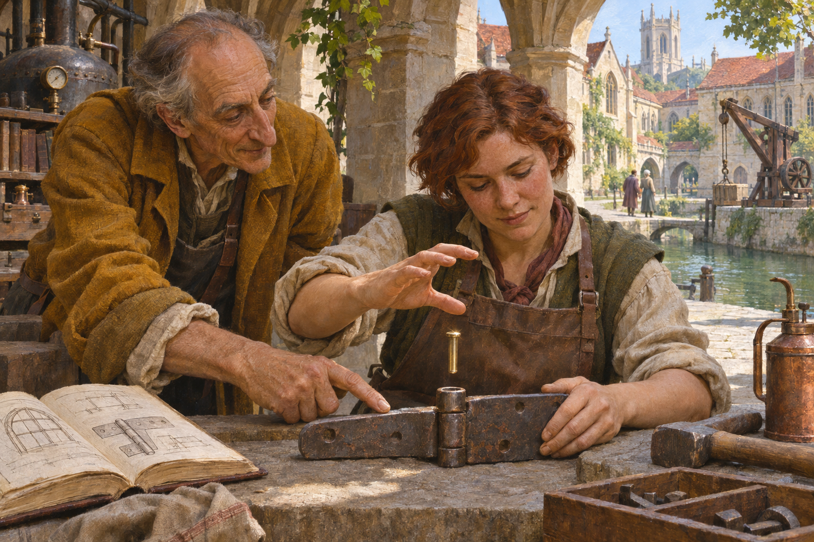
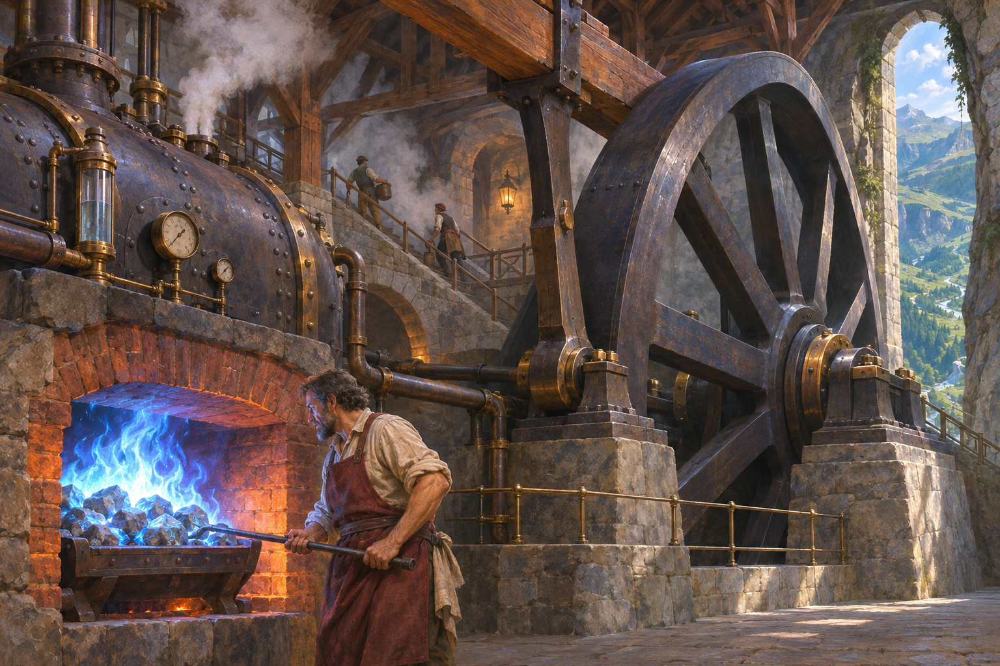
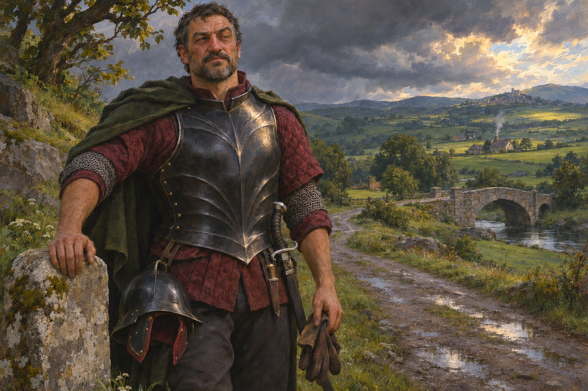
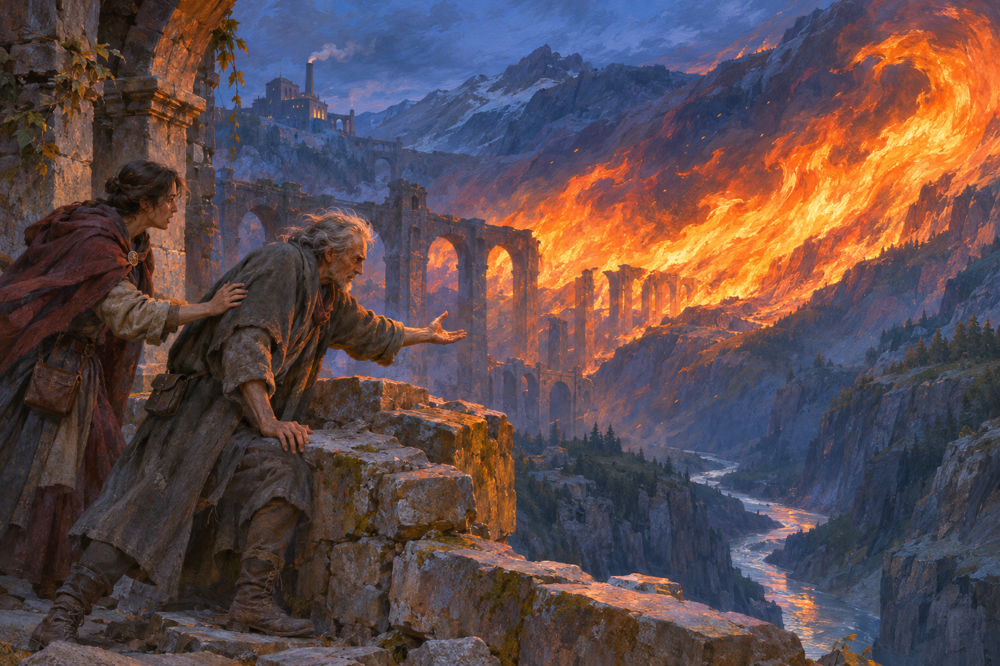
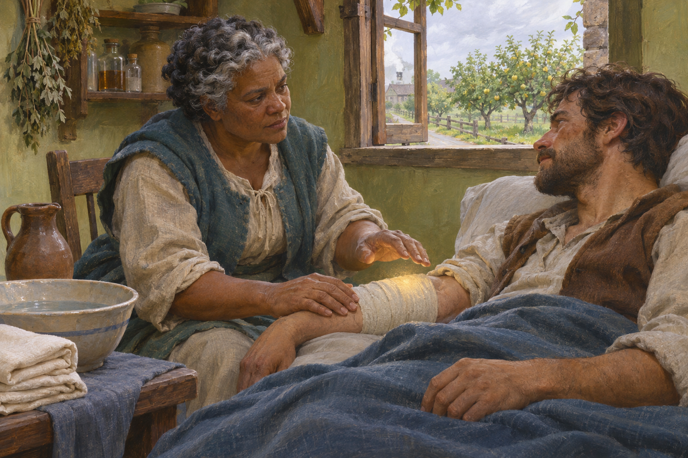
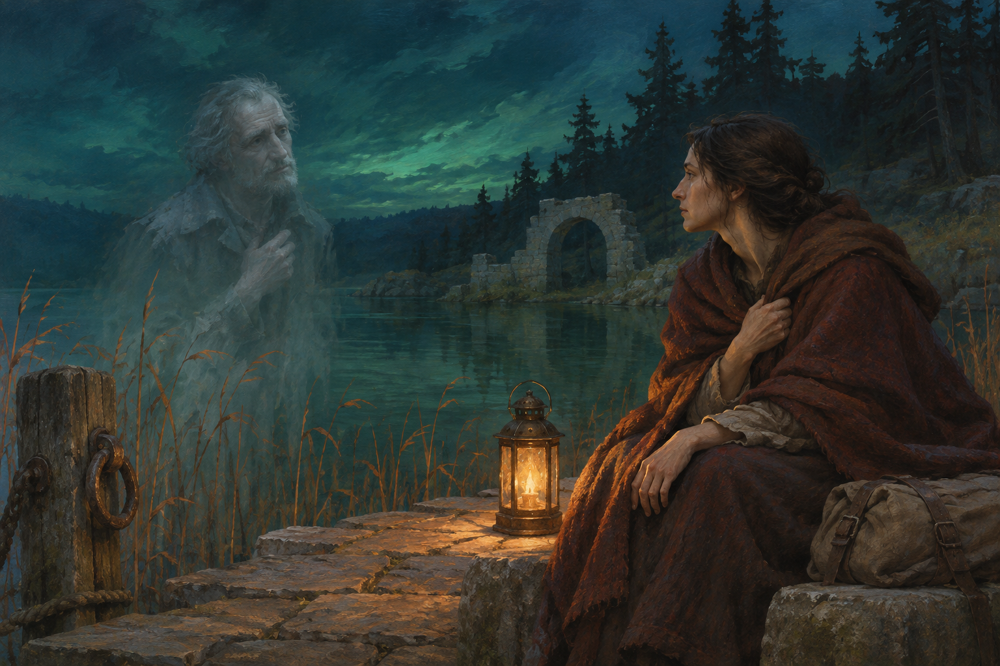

Lessons of Brass
Ambrel’s advantage shown through practical teaching: an uncommon skill becoming useful work. The exact craft and characters are exploratory.

The Stonefire Shift
Stored mana in stones supplying a substantial steam installation. The creator has confirmed that these mana-stones become permanently spent after use.

Black Enamel, Open Road
The requested field kit on a male wearer, with restrained personal equipment and a strong silhouette. No faction uniform or card assignment is implied.

The Cost of the Flame
A deliberate test of the upper end of direct personal magic: a spectacular effect and a caster visibly paying for the exertion. The exact feat is a proposal.

Between Two Breaths
Healing as skilled care with meaningful limits, integrated with ordinary treatment. No revival, instant cure or settled medical system is claimed.

A Voice in the Reeds
A conscious spirit whose presence is weak and incomplete. Tests how little physical definition can still convey a person and an encounter.
